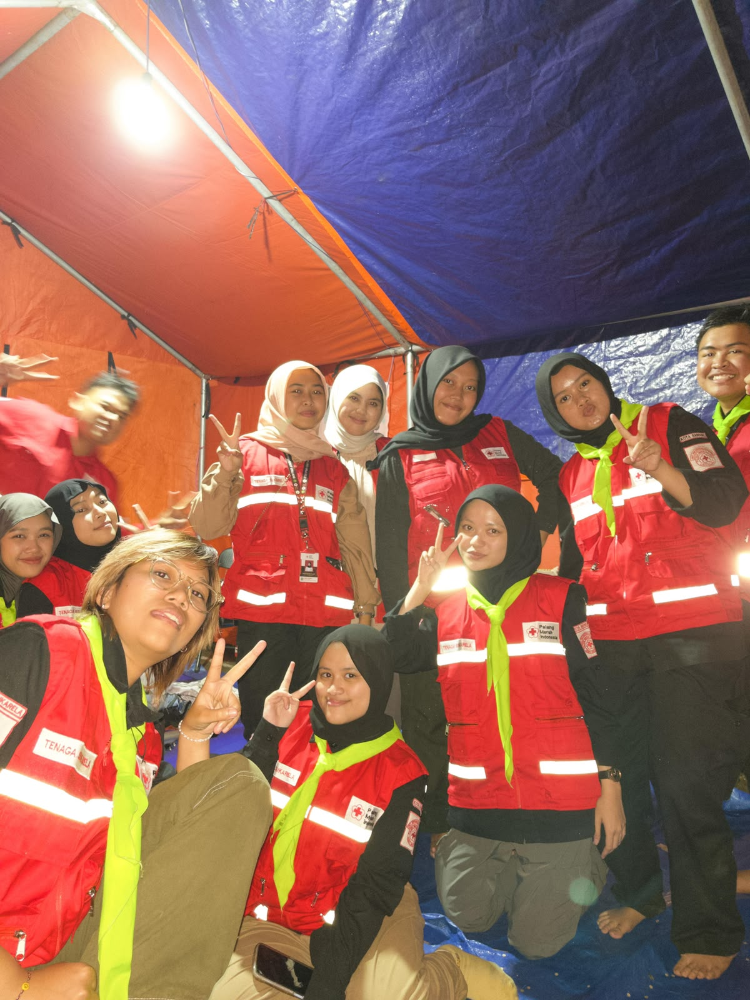
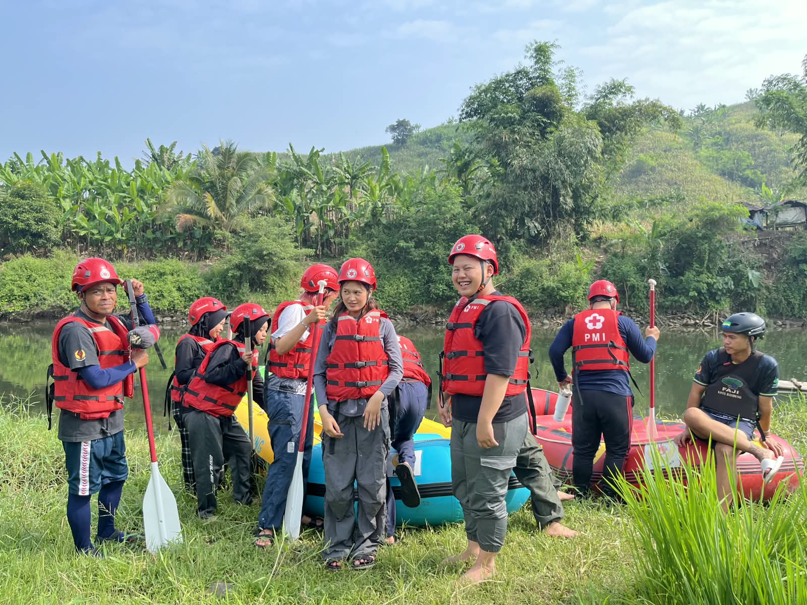
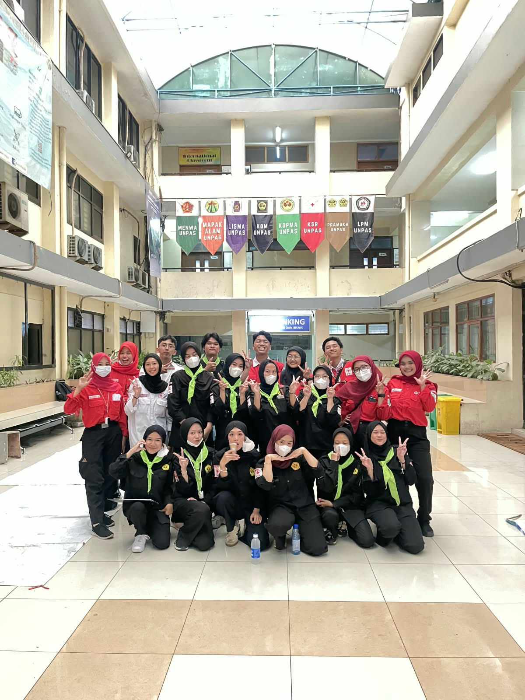
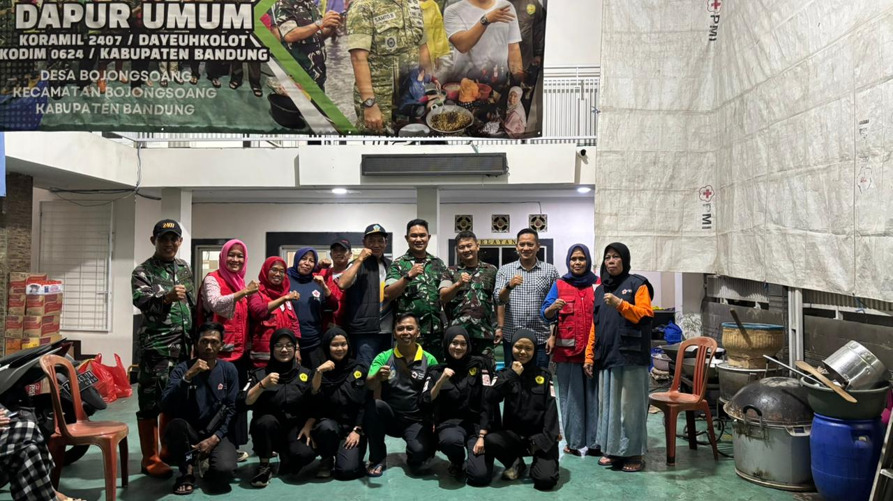
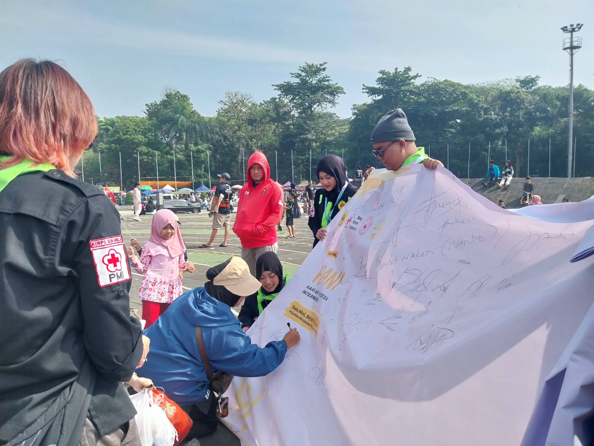

Donor Darah Sukarela
Kegiatan donor darah sebagai bentuk kepedulian sosial.
Baca Selengkapnya
Pelatihan Vertical Rescue
Pelatihan untuk meningkatkan kompetensi relawan baru.
Baca Selengkapnya
KSR PMI UNPAS Siaga Bencana Alam Cisarua
Relawan diterjunkan untuk membantu korban bencana.
Baca Selengkapnya
Pelatihan Water Rescue
Kegiatan pelatihan untuk meningkatkan keterampilan dan kesiapsiagaan relawan dalam menghadapi kondisi darurat di lingkungan perairan.
Baca Selengkapnya
Pos Medis Aksi Demonstrasi
KSR PMI UNPAS menyiagakan Pos Medis untuk memberikan dukungan pertolongan pertama dan menjaga kesiapsiagaan kesehatan selama berlangsungnya aksi demonstrasi mahasiswa.
Baca Selengkapnya
KSR PMI UNPAS Turun ke Bencana Bojongsoang
KSR PMI UNPAS turut turun membantu masyarakat terdampak banjir di Bojongsoang pada 5 Desember 2025 sebagai bentuk kepedulian dan pengabdian dalam kegiatan kemanusiaan.
Baca Selengkapnya
Peringati Hari Anti Narkotika Internasional
Dalam rangka memperingati Hari Anti Narkotika Internasional (HANI), KSR PMI Unit Universitas Pasundan mengajak mahasiswa dan masyarakat untuk meningkatkan kesadaran akan bahaya penyalahgunaan narkotika serta pentingnya menjaga kesehatan dan menciptakan lingkungan yang sehat dan aman.
Baca Selengkapnya